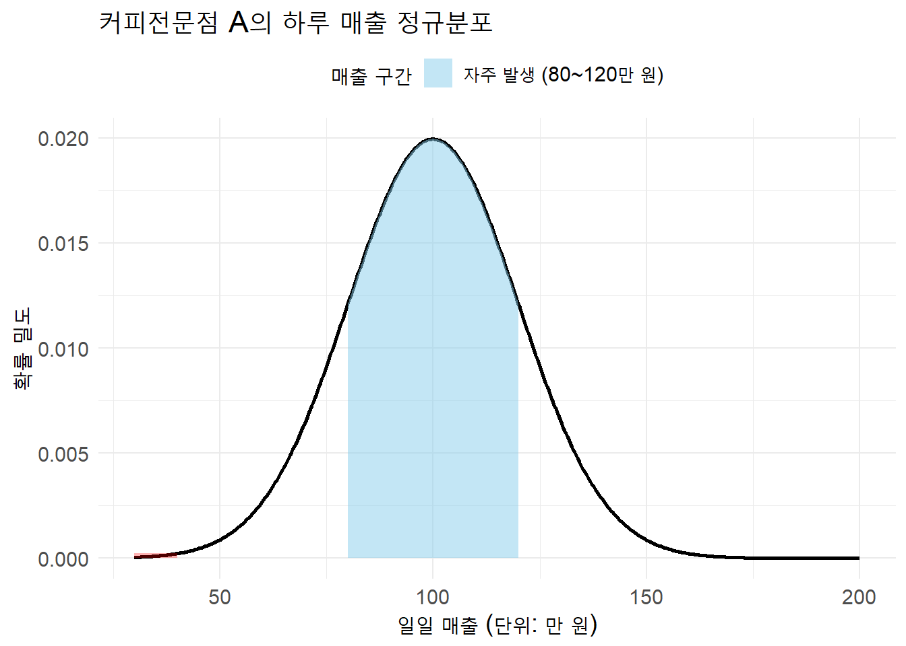
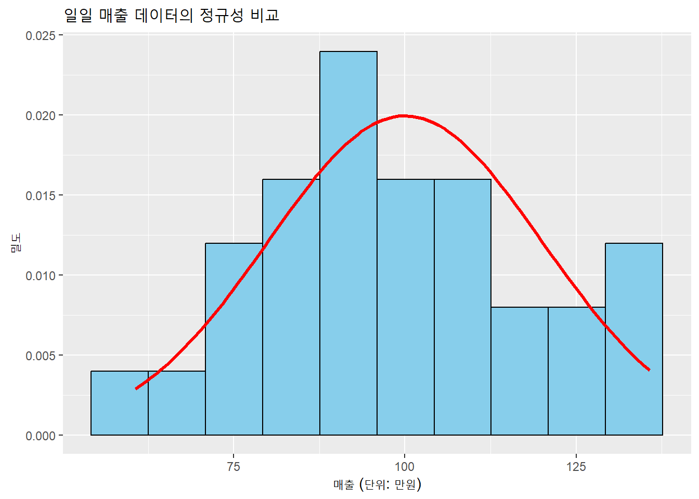

현실에서 관찰되는 숫자 데이터는 겉보기에 무작위처럼 보이지만, 사실은 일정한 규칙과 패턴을 따른다. 고객의 방문 시간, 매장의 일별 매출, 음식의 조리시간 등은 모두 전혀 예측 불가능한 숫자처럼 보일 수 있지만, 수천 건의 데이터를 쌓아놓고 보면 일정한 분포의 형태가 드러난다. 이러한 데이터의 패턴을 수학적으로 표현한 것이 바로 확률분포다.
확률분포는 데이터를 정리하고 해석하며, 미래를 예측하는 데 있어서 핵심적인 도구가 된다. 특히 외식 산업, 유통, 호텔 운영과 같이 수요 예측, 재고 관리, 마케팅 타이밍이 중요한 분야에서는 확률분포에 대한 이해 없이 정확한 판단을 내리기 어렵다.
4.1.2 정규분포는 경영 데이터의 기본 언어다
실무에서 자주 마주치는 데이터는 대부분 정규분포(normal distribution)를 따른다. 정규분포는 가운데 평균을 중심으로 좌우가 대칭인 종 모양 곡선으로 나타나며, 대부분의 값이 평균 근처에 몰려 있고 극단적인 값은 드물게 나타나는 특징을 갖는다.
예를 들어, 커피전문점 A의 하루 매출이 평균적으로 100만 원이라면, 80만 원이나 120만 원 정도는 자주 발생할 수 있지만, 30만 원이나 200만 원은 매우 드물다. 이처럼 중심은 평균이 잡고 있고, 주변으로 갈수록 가능성은 급격히 작아지는 형태가 정규분포다.
# 라이브러리 로딩library(ggplot2)library(showtext)library(dplyr)# 정규분포 파라미터mu <-100sigma <-20# x축 범위x <-seq(30, 200, length.out =500)y <-dnorm(x, mean = mu, sd = sigma)# 데이터프레임 생성df <-data.frame(x = x, y = y) %>%mutate(구간 =case_when( x >=80& x <=120~"자주 발생 (80~120만 원)", x <=40| x >=190~"드문 값 (30~40 / 190~200만 원)",TRUE~"기타" ))# 그래프 그리기ggplot(df, aes(x = x, y = y)) +# 정규분포 곡선geom_line(color ="black", linewidth =1) +# 파란색 음영 (자주 발생)geom_area(data =filter(df, 구간 =="자주 발생 (80~120만 원)"),aes(fill = 구간), alpha =0.5) +# 붉은 음영 직접 그리기 (세로 영역)annotate("rect", xmin =30, xmax =40, ymin =0, ymax =dnorm(40, mu, sigma),fill ="red", alpha =0.3) +annotate("rect", xmin =190, xmax =200, ymin =0, ymax =dnorm(190, mu, sigma),fill ="red", alpha =0.3) +# 범례용 dummy 채우기scale_fill_manual(values =c("자주 발생 (80~120만 원)"="skyblue")) +labs(title ="커피전문점 A의 하루 매출 정규분포",x ="일일 매출 (단위: 만 원)",y ="확률 밀도",fill ="매출 구간" ) +theme_minimal() +theme(text =element_text(size =14),legend.position ="top" )

이러한 분포는 단순히 아름다운 곡선이 아니라, 리스크 관리, 재무 예측, 고객 행동 분석에서 중요한 해석 도구로 활용된다. 특히 마케팅 캠페인의 효과 예측이나 매장 오픈의 수익성 시뮬레이션 등에서는 정규분포 기반 모델이 핵심이다.
4.1.3 표준정규분포: 모든 문제의 기준선
정규분포 중에서도 평균이 0이고 표준편차가 1인 특별한 형태를 표준정규분포(standard normal distribution) 또는 Z분포라고 한다. 이 Z분포는 다양한 확률문제를 계산할 때 공통의 기준선 역할을 한다.
예를 들어, 한식 브랜드 ’비빔밥나우’의 하루 평균 매출이 100만 원이고 표준편차가 20만 원이라고 하자. 어느 날 매출이 120만 원을 넘을 확률이 궁금하다면, 단순한 비율 계산으로는 불가능하다. 이럴 때 Z-값을 활용한다.
z <- (120-100) /20# 결과: z = 1print(z)
[1] 1
Z값이 1이라는 의미는, 해당 값이 평균보다 표준편차 한 개만큼 오른쪽에 있다는 뜻이다. 이 값을 표준정규분포표에서 찾으면, 약 84.1%가 이보다 작거나 같고, 15.9%가 이보다 크다는 결론이 나온다. 즉, 이 브랜드에서 120만 원 이상의 매출이 발생할 확률은 약 15.9%다.
4.1.4 예측 실패는 경영 실패로 이어진다
정규분포를 단순히 수학 공식 정도로 생각하면 현실에서 큰 오판을 하게 된다. 한 프랜차이즈 본사는 주말 평균 매출만 보고 매장 신규 입점을 결정했지만, 매출의 표준편차가 너무 커서 주말과 평일 간 차이가 심했다. 결과적으로 주중에는 적자, 주말에만 흑자가 나는 구조였고, 결국 해당 매장은 3개월 만에 철수하게 됐다.
이 사례는 정규분포를 제대로 이해하지 않으면, 평균만 보고는 절대 의사결정을 내려서는 안 된다는 경고를 보여준다. 특히 외식업처럼 계절성, 요일 효과, 시간대 편차가 큰 산업에서는 정규분포의 구조와 한계를 반드시 인지해야 한다.
4.1.5 실제 데이터와 정규분포의 비교 시각화
정규분포는 이론이지만, 실제 데이터와 얼마나 잘 맞는지는 시각화로 확인할 수 있다. 다음은 30개 매장의 일일 매출 데이터를 시뮬레이션하고, 히스토그램과 정규곡선을 함께 시각화한 예시다.
set.seed(123)sales <-rnorm(30, mean =100, sd =20)library(ggplot2)ggplot(data.frame(sales), aes(x = sales)) +geom_histogram(aes(y = ..density..), bins =10, fill ="skyblue", color ="black") +stat_function(fun = dnorm, args =list(mean =100, sd =20), col ="red", size =1.2) +labs(title ="일일 매출 데이터의 정규성 비교", x ="매출 (단위: 만원)", y ="밀도")

위 시각화에서 히스토그램이 종 모양 곡선에 잘 근접한다면, 해당 데이터는 정규분포를 잘 따르는 것이다. 만약 오른쪽으로 긴 꼬리를 가지거나, 두 개의 봉우리가 보인다면 다른 분포를 고려해야 한다.
4.1.6 확률분포는 경영 분석의 기반이다
확률분포는 단순한 통계 지식이 아니라 경영 전략의 출발점이다. 평균만 보고 판단하는 것은 숫자를 오해하는 것이고, 분포까지 이해할 수 있어야 위험을 통제하고 기회를 포착할 수 있다. 특히 정규분포는 대부분의 수치형 데이터가 따르는 구조이며, 그 내부 논리를 체계적으로 이해하는 것이 비즈니스 애널리틱스의 핵심이다.
4.2 평균 비교의 출발점: ANOVA가 필요한 이유
4.2.1 왜 t-검정으로는 부족한가?
세 그룹 이상의 평균을 비교할 때 많은 초보 분석가들은 여러 번의 t-검정을 수행하려고 한다. 이를 다중 t-검정(multiple t-tests)이라고 하는데, 이는 통계적으로 잘못된 접근이다. 예를 들어, 세 개의 커피 프랜차이즈 A, B, C의 고객 만족도 평균이 서로 다른지를 비교한다고 하자. 이 경우 A vs B, B vs C, A vs C로 세 번의 t-검정을 수행할 수 있다. 그러나 각각의 검정은 유의수준 5%를 세 번 합친것이기 때문에, 제1종 오류가 된다. 세 번의 검정을 독립적으로 수행하면, 전체 오류 누적 확률은 다음과 같이 계산된다.
\[
1 - (1 - 0.05)^3 \approx 0.14
\]
즉, 약 14%의 확률로 잘못된 결론을 낼 위험이 있다는 뜻이다. 쉽게 이야기하자면 유의수준 5%가 아닌 14% 수준으로 결론을 내게 된다는 것이다. 이는 제품 런칭, 광고 전략, 매장 폐쇄와 같은 중요한 비즈니스 의사결정에서 심각한 리스크가 된다. 그룹 수가 많아질수록 오류 누적 확률은 기하급수적으로 증가하며, 이러한 문제를 해결하기 위해 사용하는 것이 바로 일원배치 분산분석(One-way ANOVA)다.
4.2.2 이름이 왜 분산분석일까?
사실 분산분석을 이해하기 위한 가장 중요한 질문은 이것이다.
세 개 이상의 그룹의 평균값이 같은지 다른지 알고싶은데, 왜 평균분석이 아니고 분산분석을 할까?
일단, ANOVA라는 영어이름부터 해결해야 한다. ANOVA는 약어로 원래 이름은 Analyisis of Variance이다. 즉, ANalyis Of VAriance이다. 결국 영어이름도 분산분석이다. 문제는 왜 분산을 분석해서 세 개 이상의 그룹의 평균값이 같은지 다른지 알아내냐는 것이다.
우선 답을 먼저 이야기 하자면, 앞서, t-test는 t-value를 구했고, z-test에서는 z-value를 구했다면, ANOVA 에서는 F-vlaue를 구하는 것이 핵심이다. 여기서 F-value는 두 개의 분산의 비율이다. 두 개의 분산은 그룹 내 분산 (Within Variance)와 그룹 간 분산 (Between Variance)이다. 이제 ANOVA에 대해 자세하게 알아보자.
4.2.3 ANOVA는 무엇을 비교하는가?
ANOVA는 전체 데이터의 총 분산(Total Variance)을 두 가지로 나눈다.
-그룹 간 분산(Between-group Variance): 각 그룹 평균 간의 차이에서 기인하는 분산 -그룹 내 분산(Within-group Variance): 각 그룹 내 개별 오차에서 오는 분산
이 두 가지 변동을 아래 표와 같이 정리할 수 있다.
구분
설명
예시
그룹 간 분산
그룹 평균 간 차이
브랜드(그룹) A, B, C 간 고객 만족도 평균 차이
그룹 내 분산
동일 그룹 내 개인차
브랜드(그룹) A/B/C 각각 내부에서 고객마다의 만족도 차이
ANOVA는 이 두 분산의 비율을 이용해 F-통계량(F-statistic) 즉 F-value를 계산한다.
\[
F-value = \frac{\text{그룹 간 분산}}{\text{그룹 내 분산}} = \frac{\text{그룹 간 평균 제곱 (MSB)}}{\text{그룹 내 평균 제곱 (MSW)}}
\]
F-값이 클수록, 즉 그룹 간 차이가 그룹 내 변동보다 클수록 집단 간 평균 차이가 통계적으로 차이가 날 가능성이 높다고 해석한다.
공식이 아닌 개념을 잘 잡아야 한다. F-vlaue의 분자를 보면 결국 그룹 간 분산이란, 전체 평균 (GM: Grand Mean)에서 각 그룹의 평균값까지의 거리를 의미한다. 다시 한 번, 분산(혹은 표준편차)의 개념을 설명하자면, 분산이란 결론적으로 평균값에서부터 데이터가 떨어져 있는 평균적인 거리를 의미한다. 따라서, 그룹 간 분산이란 전체 평균 (GM)을 중심으로 각 그룹의 평균값이 얼마나 떨어져 있는지에 대한 분산이다. 이 분산이 크다면, 적어도 한 그룹의 평균값은 전체 평균과 통계적으로 다를 것이다. 그러나, 이 분산이 작다면, 아마도 모든 그룹의 평균값은 전체 평균 (GM)을 중심으로 가깝게 모여있다고 판단할 수 있을 것이다.
Figure 4.1: 그룹 간 분산
문제는 여전히 이 그룹 간 분산이 얼마나 커야 큰지, 혹은 얼마나 작아야 작은지 그냥 판단하는 것은 불가능 하다는 점이다. 따라서, t-value에서처럼 다른 비교대상이 필요하고, 이때 사용되는 비교 대상이 바로 그룹 내 분산이다. 그룹 내 분산이란 각 그룹내의 분산의 총합이다. 따라서 이 분산은 t-value 공식의 분모처럼 의미 없는 무작위의 Random한 분산이다. 그러므로 분자인 그룹 간 분산이 분모인 그룹 내 분산보다 충분히 크지 못하다면, 이는 그룹 간 분산이 무작위 적인 의미없는 분산과 별 다를 바가 없다는 의미이므로, 당연히 그룹 간의 평균값의 차이는 없는 것으로 판단하는 것이 옳을 것이다.
Figure 4.2: 그룹 내 분산
4.2.4 커피 프랜차이즈의 만족도 차이
어떤 마케팅 컨설팅 회사가 다음과 같은 고객 만족도 조사를 실시했다고 하자. 세 개의 커피 프랜차이즈 A, B, C에 대해 총 30명의 고객에게 만족도를 1~7점으로 평가받았다.
# R 실습 코드: 세 그룹 평균 비교set.seed(123)brand_A <-rnorm(10, mean =5.4, sd =0.6)brand_B <-rnorm(10, mean =4.7, sd =0.5)brand_C <-rnorm(10, mean =5.1, sd =0.4)satisfaction <-c(brand_A, brand_B, brand_C)brand <-factor(rep(c("A", "B", "C"), each =10))anova_result <-aov(satisfaction ~ brand)summary(anova_result)
Df Sum Sq Mean Sq F value Pr(>F)
brand 2 2.303 1.1514 4.696 0.0178 *
Residuals 27 6.620 0.2452
---
Signif. codes: 0 '***' 0.001 '**' 0.01 '*' 0.05 '.' 0.1 ' ' 1
이 분석 결과에서 F값이 크고 p값이 0.05보다 작다면, 이는 무슨 뜻일까? 여기서 우리는 ANOVA의 통계적 가설에 대해 살펴볼 필요가 있다.
\[
H_0: \text{All groups' means are same}
\]
\[
H_a: \text{At least, one group's mean is different}
\]
p-값이 0.05보다 작아서 유의하다면, 이는 귀무가설을 기각하는 것이다. 따라서 우리는 위의 세 브랜드 A/B/C 중 적어도 하나의 평균값은 전체 평균과 다르다는 사실을 알 수 있다. 즉, “최소한 하나의 브랜드가 다른 브랜드와 평균이 다르다”는 의미 이다. 문제는 이때 어느 브랜드가 다른지 알 수 가 없다는 점이다. 심지어, 셋 중 하나만 다른지 아니면 셋 다 다른지 알 수가 없다는 점이다. 즉, 적어도 하나는 다르다는 말은 누군가 다르긴 한데, 자세한 건 모른다는 의미이다. 만약, 자세한 것을 알고 싶다면 사후 검정(Post-hoc test)이 필요하다.
4.2.5 ANOVA 계산방법과 결과표를 읽는 방법
앞에서 살펴본 F-값은 다음과 같이 쓸 수 있다. 아래에서 보이는 MS라는 단어는 Mean Squared의 약자이다. 즉 제곱평균이라는 의미인데, 이는 분산 계산식에서 분자 부분을 Sum of Squared라고 표현하는데, 이 Sum of Squared를 데이터의 개수로 나누면 평균의 개념이 되므로 Mean Squared라고 표현한다. 즉, MS란 분산을 의미한다.
Table tbl-ss_between 은 그룹 간 분산의 분자부분 즉 Sum of Squared 부분을 먼저 계산한 것이다. 위와 같이 1 번 그룹(감기약 A)에 3 명, 2 번 그룹(감기약 B)에 4 명, 그리고 마지막으로 3 번 그룹(플라시보)에 3명이 있어 동일한 계산을 3 회, 4 회, 3 회 반복한다. 반복하는 이유는 우리가 가진 데이터의 개수대로 해야만 정확하기 때문이다. 첫 번째 그룹에 세 명의 사람이 있고 이 세 명의 회복일수의 평균이 6.00일이므로 이 6.00일이라는 평균값은 한 개가 아닌 세 개로부터 나왔으므로 세 번 전체평균과의 차이를 구해 제곱해서 합해야 한다. 그러므로 위의 세 그룹의 경우를 단순하게 계산해 본다면 \(3 \times (6.00-6.44)^2 + 4 \times (5.95-6.44)^2 + 3 \times (7.53-6.44)^2 = 5.127\)이 된다.
여기서 계산된 \(3 \times (6.00-6.44)^2 + 4 \times (5.95-6.44)^2 + 3 \times (7.53-6.44)^2 = 5.127\)은 그룹 간 분산의 분자부분이다. 이제 정확한 그룹 간 분산을 계산하기 위해서 분모부분이 필요하다. 이 계산에서 분모부분이 자유도 (degree of freedom)이다. 두 개의 분산 중 그룹 간 분산의 자유도가 첫 번째 자유도 이고, \(df_1\)이라고 표기한다. 이 자유도의 계산은 다음과 같다.
\[df_1 = k -1 \; (\text{k는 그룹의 갯수})\]
우리의 독립변수는 감기약 A, B 그리고 플라시보로 이루어져 있으므로 \(k = 3\)이다. 따라서 \(df_1 = k -1 = 2\)가 된다. 그러므로 우리가 원하는 그룹 간 분산은 \(SS_{Between} \div df_1 = 5.127 \div 2\)가 될 것이다.
다음은 그룹 내 분산의 계산이다.
Table 4.3: \(SS_{Within}\) 계산
id
days
group
group mean
\(SS_{Within}\)
1
5.3
1
6.00
\(=(5.30-6.00)^2 = 0.49\)
2
6.0
1
6.00
\(=(6.00-6.00)^2 = 0.00\)
3
6.7
1
6.00
\(=(6.70-6.00)^2 = 0.49\)
4
5.5
2
5.95
\(=(5.50-5.95)^2 = 0.20\)
5
6.2
2
5.95
\(=(6.20-5.95)^2 = 0.06\)
6
6.4
2
5.95
\(=(6.40-5.95)^2 = 0.20\)
7
5.7
2
5.95
\(=(5.70-5.95)^2 = 0.06\)
8
7.5
3
7.53
\(=(7.50-7.53)^2 = 0.001\)
9
7.2
3
7.53
\(=(7.20-7.53)^2 = 0.11\)
10
7.9
3
7.53
\(=(7.90-7.53)^2 = 0.14\)
Table tbl-ss_within 에서 보는 바와 같이, 그룹 내 분산은 각 값에서 그룹 평균값을 빼서 제곱하여 모두 합하면 된다. 소수점 둘째자리 이하는 절삭하였다. 전부 다 합치면 약 1.757이다. 즉, \(SS_{Within} = 1.757\)이다. 이제 그룹 내 분산의 분모부분을 알아야 한다. 이것도 또한 자유도이며 두 번째 자유도이다. \(df_2 = n - k\)인데, 데이터의 개수에서 독립변수의 그룹의 개수를 빼주면 된다. 총 데이터의 개수는 10개이고 그룹은 3 개 이므로 \(df_2 = 10 - 3 = 7\)이 된다. 재미있는 것은 \(df_1 + df_2 = 2 + 7 = 9 = n -1\)라는 사실인데, 두 개의 자유도를 합치니 t-test의 자유도와 동일해진다.
그런데, 보통 ANOVA를 통계 프로그램에서 돌리고 나면 아래와 같은 결과 표가 나타난다.
Table 4.4: 분산분석 결과표
ANOVA Result
Source of variance
SS
df
MS
F-value
p-value
Between
5.127
2
2.564
10.216
0.008
Within
1.757
7
0.251
Total
6.884
9
우리가 위에서 계산한 값들이 모두 표에 나타나 있다. 가장 첫 번째에 SS (Sum of Squared)가 있고 그 다음에 df 그리고 SS를 df로 나눈 MS(Mean Squared)가 나온다. 이 MS가 우리가 앞에서 설명했듯이 바로 분산이다. 그리고 그룹 간 분산을 그룹 내 분산으로 나눈 것이 바로 F-value이다. 마지막에 p-value가 나오는데, 5%보다 확실히 작으므로 유의하다.
엑셀에서 p-value를 구할 수 있는 함수는 fdist라는 엑셀 함수이다. =fdist(F-value, df1, df2) 이런 순서로 넣으시면 우리가 원하는 p-value를 구할 수 있다. 한 번 엑셀에서 위의 계산을 모두 해보기 바란다.
4.3 사후검정: 어디에서 차이가 나는가?
4.3.1 ANOVA 결과만으로는 부족하다
일원배치 분산분석(ANOVA)에서 유의미한 p값이 나왔다고 해서 모든 그룹 간 평균이 서로 다르다는 뜻은 아니다. ANOVA는 단지 적어도 한 그룹의 평균이 다른 그룹과 유의하게 다르다는 사실만 알려준다. 하지만 실제 경영 현장에서 중요한 것은 어떤 그룹 사이에서 차이가 나는가?이다. 이 질문에 답하기 위해 사용하는 것이 바로 사후검정(Post-hoc test)이다.
4.3.2 가장 널리 사용되는 방법: Tukey HSD
사후검정 중에서도 가장 많이 사용되는 방법은 Tukey의 Honest Significant Difference (Tukey HSD)이다. 이 방법은 모든 가능한 그룹 쌍에 대해 평균 차이를 계산하고, 그 차이가 통계적으로 유의한지를 평가한다. 예를 들어, 세 개의 커피 브랜드 A, B, C의 매출 평균을 비교한다고 하자. ANOVA 결과 유의미한 차이가 있었다면, 다음과 같이 TukeyHSD() 함수를 이용해 어떤 쌍에서 차이가 나는지 확인할 수 있다.
물론 통계 프로그램을 사용하다보면 상당히 많은 종류의 사후검정 방법이 있다는 사실을 알게된다. 서로 간에 약간의 계산상의 차이가 있을 뿐, 이 방법들은 기본적으로 앞에서 이야기한 multiple t-test의 수정 버전이라고 할 수 있다. 앞에서 multiple t-test는 결국 1종오류의 문제가 있다고 이야기 했다. 이 문제를 해결하는 방법으로 계산식을 새로 만든 것이 ANOVA의 사후 검정이다. 결국, 사후 검정을 하면 각 그룹을 1대 1로 비교할 수 있다. 다양한 방법 중 어떤 방법을 사용해도 큰 문제는 없다. 왜냐하면 결과가 다 비슷하게 나오기 때문이다. 문제는 이 중에 하나가 다르게 나왔을 때, 다수의 경과를 따르는 것이 중요하다는 것이다. 가끔은 경영현장에서 여러 이해관계가 얽히면서 유리한 결과만 리포트하는 경우가 발생한다. 이는 결국 통계가 문제가 아니라 사람이 문제인 경우이다.
# ANOVA 결과가 저장된 객체 anova_result에 대해 사후검정 실시TukeyHSD(anova_result)
이 표는 각 그룹 쌍 간의 평균 차이와 그 차이가 통계적으로 유의한지를 보여준다. 예를 들어, A와 B 그룹 간의 평균 차이는 -0.64로, p-값이 0.02로 유의미하므로 A와 B 그룹의 평균은 서로 다르다고 결론지을 수 있다. B와 C 그룹 간의 평균 차이는 -0.51로, p-값이 0.07로 다소 애매한 상황에 있다. 통계적으로는 유의하지 않지만, 데이터의 수가 적다보니 만약 더 많은 조사를 하여 표본의 크기를 늘린다면 유의할 수도 있다. 반면 A와 C 그룹 간의 평균 차이는 0.13으로, p-값이 0.84로 유의하지 않으므로 A와 C 그룹의 평균은 통계적으로 동일하다고 볼 수 있다.
시각화와 해석: 데이터에 스토리를 더하라
분산분석과 사후검정 결과는 표로도 해석할 수 있지만, 시각적으로 보여주는 것이 훨씬 강력한 설득 도구가 된다. 특히 Boxplot은 각 그룹의 분포, 중앙값, 이상치를 동시에 보여주기 때문에 투자자나 경영진을 대상으로 한 보고서에 매우 유용하다.
그림을 보니 어떤 생각이 드는가? 숫자로만 보면서 유의한지 아닌지에만 주로 관심을 두다가 그림을 보는 순간 완전히 다른 생각이 들 것이다. 만약 그림을 보지 않고 경영 의사결정을 해야했다면, 어땠을까? 브랜드 B와 C는 컨설턴트 입장에서 보자면, 사실상 큰 차이가 없다고 해야할 것이다. 조사대상을 늘려서 유의한 결과가 나온다 해도 둘 사이의 고객 만족도의 차이는 그다지 크지 않아 보인다. 그러나, 브랜드 A는 확연히 달라 보인다. 즉, 브랜드 A의 고객만족도는 다른 브랜드와는 분명히 다르다고 결론짓고 이를 의사결정에 반영해야 할 것이다.
4.3.3 숫자는 잊히지만 그림은 기억된다
실제 현장에서는 p값 0.02이라는 숫자보다, 세 박스가 얼마나 다르게 보이는지가 더 큰 영향을 미친다. CEO는 표보다 그림을 더 오래 기억한다. 사후검정은 단순한 수치 비교를 넘어서, 차이를 증명하고, 그 차이를 납득시키는 도구로 사용되어야 한다. 표 하나로는 바꾸기 어려운 경영자의 생각도, 그림 하나로는 충분히 흔들 수 있다.
4.4 실습 활동: ANOVA와 사후검정 완전 정복
4.4.1 실습 개요
3개 외식 브랜드(스타벅스, 컴포즈커피, 메가커피)의 한 달간 일별 매출 및 고객 데이터를 활용한 ANOVA 분석 실습을 진행한다.
각 브랜드는 동일 지역 내에 위치한 경쟁 매장으로 설정되며, 실습 목적은 브랜드 간 통계적으로 유의미한 매출 차이가 존재하는지 분석하고, 그 차이를 시각화 및 해석하는 것이다.
4.4.2 분석 대상 데이터
아래는 분석에 활용할 주요 변수와 의미이다.
변수명
설명
날짜
관측 일자
브랜드
매장 브랜드 (스타벅스, 컴포즈커피, 메가커피)
일매출
하루 동안의 총 매출 (₩단위)
방문객수
해당 일자 매장을 방문한 고객 수
구매고객수
방문객 중 실제로 구매한 고객 수
평균체류시간_분
고객의 평균 매장 체류 시간 (분 단위)
이 데이터는 실제 경영 현장에서 매장 성과 비교, 매장 전략 재조정, 마케팅 효과 분석 등에 활용되는 방식과 유사하게 구성되었다.
현장에서는 보고서를 읽는 사람이 통계를 모를 가능성이 높다. 결국 데이터를 말처럼, 그림처럼 설명하는 능력이 실무를 좌우한다. 이 실습은 단순히 분석을 수행하는 데 그치지 않고, 결과를 해석하고 전달하는 능력까지 함께 훈련한다. 더불어, RStudo의 quarto를 사용하여 처음으로 beamer라는 pdf 파일 형식의 프리젠테이션 슬라이드를 만들어 볼 것이다. quarto 인스톨부터 리포트를 최종적으로 랜더링 하기까지 상당한 시행착오가 있을 것이다. 이를 ChatGPT 및 AI와 함께 해결하면서 첫 번째 리포트를 만들어 보기 바란다. Quarto 홈페이지를 참고하여 작성해보기 바란다.